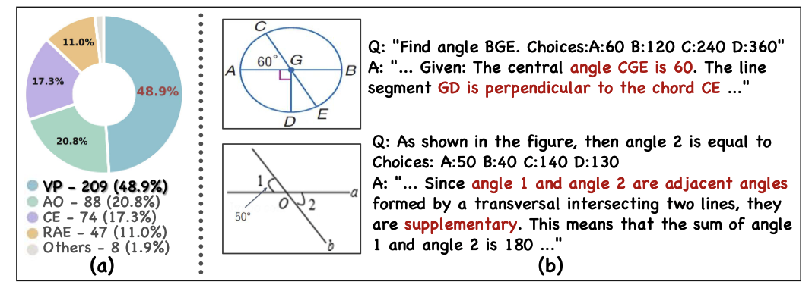
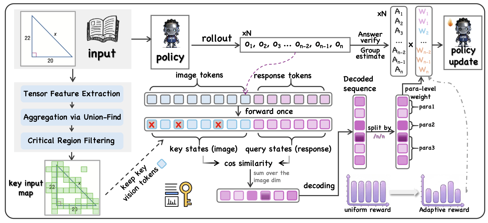
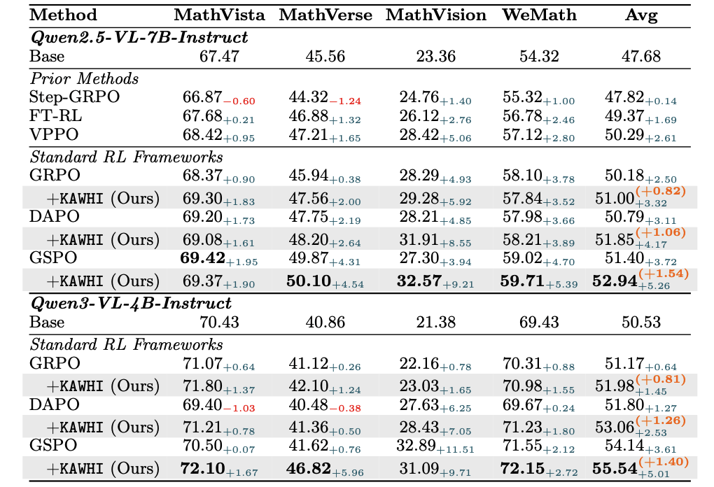
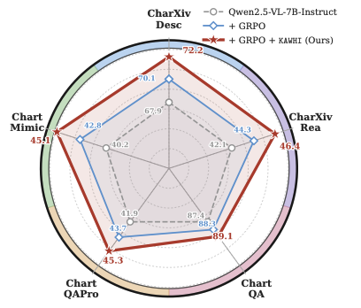
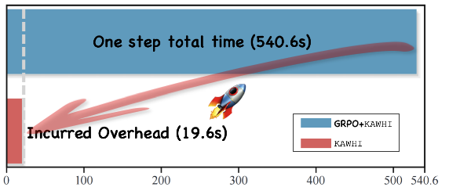
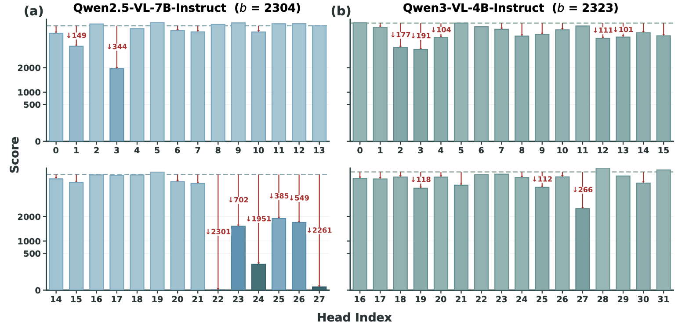
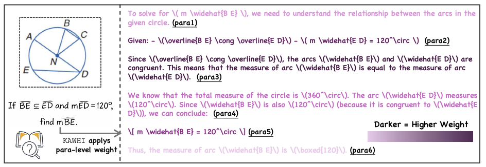

Reinforcement Learning from Verifiable Rewards (RLVR) has substantially enhanced the reasoning capabilities of large language models in abstract reasoning tasks. However, its application to Large Vision-Language Models (LVLMs) remains constrained by a structural representational bottleneck. Existing approaches generally lack explicit modeling and effective utilization of visual information, preventing visual representations from being tightly coupled with the reinforcement learning optimization process and thereby limiting further improvements in multimodal reasoning performance.
To address this limitation, we propose KAWHI (Key-Region Aligned Weighted Harmonic Incentive), a plug-and-play reward reweighting mechanism that explicitly incorporates structured visual information into uniform reward policy optimization frameworks. The method adaptively localizes semantically salient regions through hierarchical geometric aggregation, identifies vision-critical attention heads via structured attribution, and performs paragraph-level credit reallocation to align spatial visual evidence with semantically decisive reasoning steps. Extensive experiments on multiple reasoning benchmarks demonstrate that KAWHI serves as a general enhancement module, consistently improving the performance of various uniform reward optimization algorithms.

Figure 1: (a) Error distribution across five categories: VP (visual perception error), AO (answer only), CE (calculation error), RAE (rule application error), and Others. (b) Two VP cases from MathVerse. Red highlights indicate visual misinterpretation.
Although LVLMs have demonstrated remarkable Chain-of-Thought (CoT) capabilities in complex tasks such as mathematical reasoning and chart parsing, their efficacy rests upon a fundamental representational bottleneck: the assumption that visual encoders can achieve complete and uniform encoding of visual information through dense token sampling.
This premise neglects the sparse distribution characteristics and task-specific relevance inherent in visual scenes, rendering models incapable of precisely capturing the discriminative visual evidence upon which reasoning processes depend. This perceptual bottleneck biases attention allocation in RLVR-trained LVLMs, impairing focus on visually salient cues and ultimately constraining performance.

Figure 2: Overview of the KAWHI mechanism. Critical regions are selected using the SGUF algorithm. The decoded sequence denotes the textual output generated from response tokens, segmented by the paragraph delimiter.

Table 1: Main results on Qwen2.5-VL-7B-Instruct and Qwen3-VL-4B-Instruct. +Δ/−Δ denote changes vs. baselines; (+X.XX) shows gains over base RL methods.
Qwen2.5-VL-7B-Instruct: Integrating KAWHI into GRPO achieves +3.32% average improvement across MathVista, MathVerse, MathVision, and WeMath benchmarks. DAPO+KAWHI achieves +4.17% and GSPO+KAWHI achieves +5.26%.
Qwen3-VL-4B-Instruct: KAWHI consistently delivers performance gains across all RL frameworks, with GSPO+KAWHI achieving the highest average improvement of +5.01%.

Figure 4: Radar chart comparison of GRPO and GRPO+KAWHI on five chart benchmarks (base model: Qwen2.5-VL-7B-Instruct).
On chart understanding tasks, incorporating KAWHI leads to performance gains of +2.1% on ChartXivDesc, +2.1% on ChartXivRea, +0.8% on ChartQA, +1.6% on ChartQA-Pro, and +2.3% on ChartMimic. These results indicate that KAWHI generalizes well to structured visual tasks.

Table 2: Ablation on Qwen2.5-VL-7B-Instruct. Results on MathVerse and MathVision. ↓X.XX indicates drop vs. GRPO+KAWHI.
Region Selection: SGUF effectively identifies critical visual tokens. Random selection achieves gains of 0.4% and 0.7%, while inverse selection underperforms GRPO, validating the necessity of critical visual information.
Reward Metric: Key-Query formulation outperforms Key-Key by 0.48% and 0.33%, supporting asymmetric, task-conditioned alignment for more precise cross-modal modeling.
Response Granularity: Paragraph-level segmentation maintains semantic structural integrity. Token-level segmentation results in larger decreases of 1.35% and 2.64%.

Figure 3: Vision-Critical head identification via global ablation on the MME benchmark. Here, b denotes the performance score of the baseline models.
We conduct global head ablation on the multimodal benchmark MME, which comprises 14 subtasks covering coarse-grained recognition, fine-grained classification, and higher-level reasoning. Attention heads with identical indices are systematically masked across all decoder layers, and their marginal impact on visual performance is quantified. Heads whose removal results in an aggregated MME score drop exceeding 50 points are designated as vision-critical.
[ CLICK ON IMAGE TO REVEAL ANALYSIS ]

@article{han2026kawhi,
title={KAWHI: Key-Region Aligned Weighted Harmonic Incentive for Bridging Visual Representation and Reinforcement Learning in Large Vision-Language Models},
author={Han, Yuhang and Wu, Yuyang and Jiao, Zhengbo and Wang, Yiyu and Liu, Xuyang and Wang, Shaobo and Xu, Hanlin and Hu, Xuming and Zhang, Linfeng},
journal={arXiv preprint arXiv:2601.xxxxx},
year={2026}
}[ KAWHI :: ]
© 2026 KAWHI Team. All rights reserved.